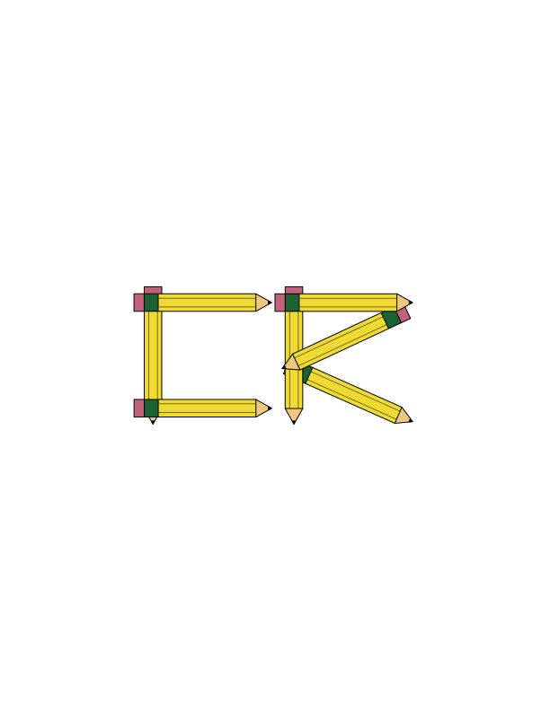

My name is Corey and I am a graphic design major at the University of Massachusetts at Dartmouth. I am originally from Somerset, Massachusetts. I am most passionate about graphic design and music. I like all genres of music, but I mostly enjoy hard rock, metal, and hip-hop. I have used my artistic abilities for both my community and clients in the music business in the past. I hope to use my talent to do more for people in the future, especially in the music industry.
INSTAGRAM: @coreyrussart
G-MAIL: coreyrussart@gmail.com
These are the tracks that have shaped my life through the years and that helped inspire me as a visual artist.